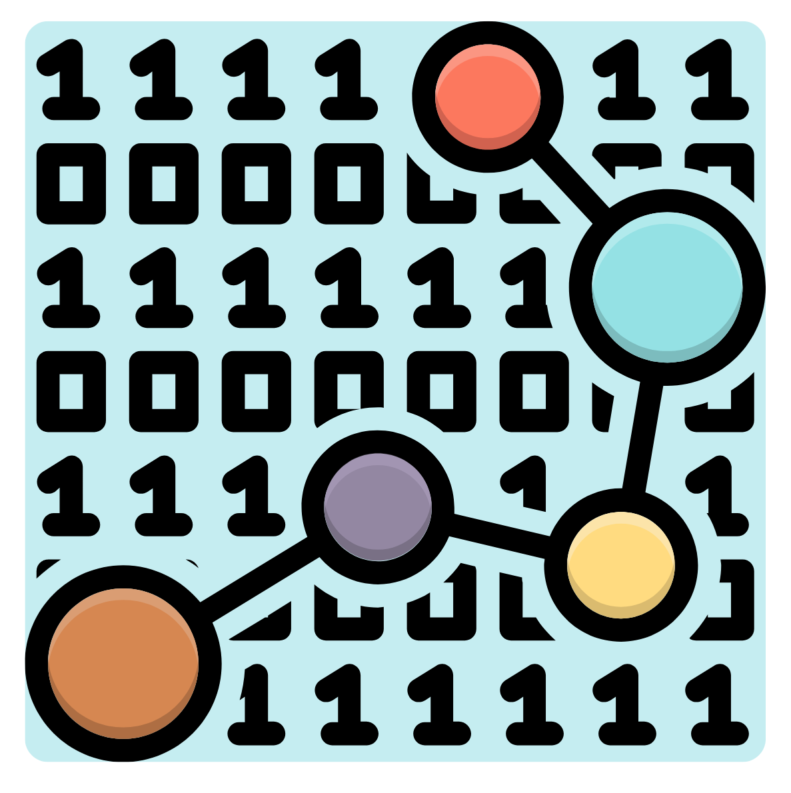
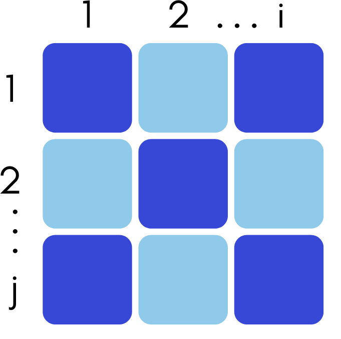
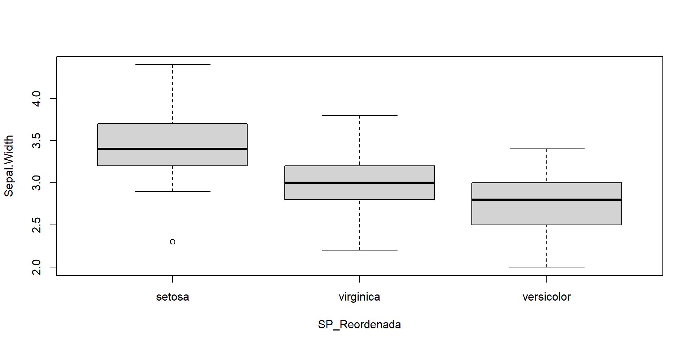
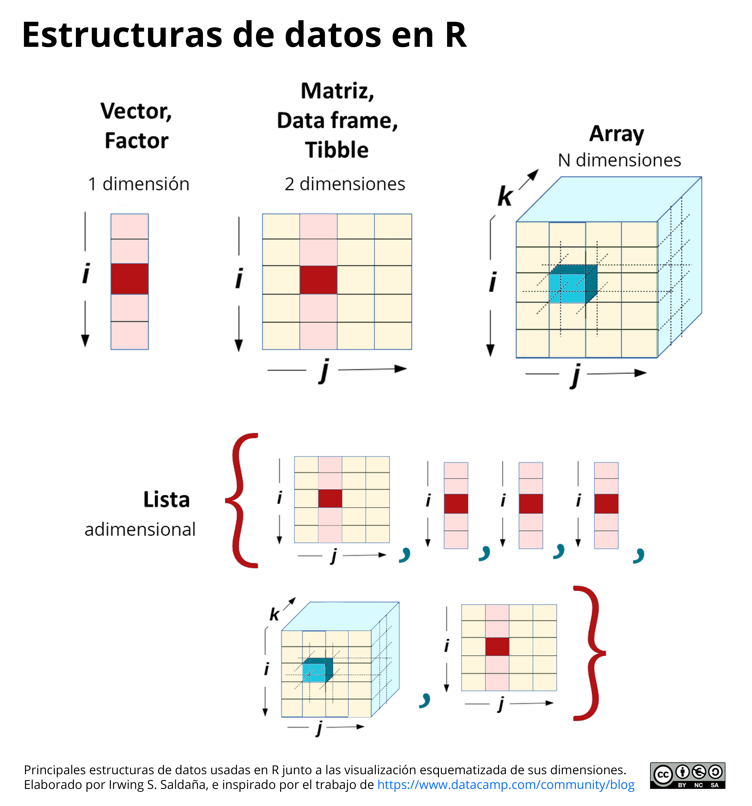

Fundamentos de programación con R
Track: Estadística y programación con R2022-3
Irwing S. Saldaña
Sintaxis del lenguaje R
Clase 2
Sección 4: Introducción al código de R
4.1. Primera estructura de datos: vectores
En programación, los datos son la base fundamental de los procesos. La forma más sencilla de ordenar los datos es colocándo todo en un vector

4.1. Primera estructura de datos: vectores
4.1. Primera estructura de datos: vectores
En programación, los datos son la base fundamental de los procesos. La forma más sencilla de ordenar los datos es colocándo todo en un vector
4.1. Primera estructura de datos: vectores
En programación, los datos son la base fundamental de los procesos. La forma más sencilla de ordenar los datos es colocándo todo en un vector
4.1. Primera estructura de datos: vectores
En programación, los datos son la base fundamental de los procesos. La forma más sencilla de ordenar los datos es colocándo todo en un vector
4.1. Primera estructura de datos: vectores
En programación, los datos son la base fundamental de los procesos. La forma más sencilla de ordenar los datos es colocándo todo en un vector
4.2. Creación de variables
Ahora que conoces cómo crear un vector en R, podrás guardar dicha información en la memoria de RStudio: el ambiente (pestaña Environment). Para crear una variable y guardar información usa el operador de asignación <-
4.2. Creación de variables
Ahora que conoces cómo crear un vector en R, podrás guardar dicha información en la memoria de RStudio: el ambiente (pestaña Environment). Para crear una variable y guardar información usa el operador de asignación <-
4.2. Creación de variables
Para recuperar la información guardada en el ambiente se debe ejecutar el nombre de la variable contenedora:
4.2. Creación de variables
Otra forma de ver los objetos (variables) del ambiente es utilizar la funciones de visualización View() (reservado para tablas, o listas, no para vectores), head(), tail(); o de revisión de estructura str():
4.2. Creación de variables
Además podemos preguntarle a R sobre un objeto: ¿qué es el objeto?/ con is(), o con preguntas lógicas específicas como ¿el objeto es un vector? con is.vector():
4.3. 50 Funciones básicas en R
%>% # Pipe
|> # Pipe nativo
mean() # Promedio
median() # Mediana
sd() # Desviación estándar
var() # Varianza
quantile() # Cálculo de cuantiles
range() # Rango de valores
seq_along() # Secuencia numérica entre el máximo y mínimo
sum() # Sumatoria
cumsum() # Suma acumulada
prod() # Productorio
cumprod() # Producto acumulado
max() # Valor máximo
min() # Valor mínimo4.3. 50 Funciones básicas en R
seq() # Crear secuencia
rep() # Crear vector de repeticiones
paste0() # Concatenar strings (textos) sin dejar espacio
paste() # Concatenar strings (textos)
sort() # Reordenar de menor a mayor, o viceversa
rev() # Revertir el orden
unique() # Valores únicos en un vector
scale() # Transformación: Estandarización
lm() # Crear modelo lineal
glm() # Crear modelo generalizado lineal
aov() # Crear anova
summary() # Ver resumen estadístico de un objeto de modelamiento
chisq.test() # Crear prueba de chi cuadrado
t.test() # Crear prueba de t
cor.test() # Calcular la correlación entre dos vectores4.3. 50 Funciones básicas en R
plot() # Plot básico
hist() # Histograma de un vector
boxplot() # Boxplot o gráfico de cajas
plot(density()) # Gráfico de densidad
getwd() # Obtener el directorio de trabajo actual
setwd() # Definir un directorio de trabajo
str() # Ver la estructura de un objeto
View() # Observar una tabla o lista como una pestaña
names() # Ver los nombres de un objeto (nombres de columna)
length() # Obtener la cantidad de elementos de un vector
ncol() # Obtener el número de columnas
nrow() # Obtener el número de filas
head() # Visualizar las primeras 6 filas de una tabla
tail() # Visualizar las últimas 6 filas de una tabla4.3. 50 Funciones básicas en R
rm() # Remover un objeto
ls() # Lista de objetos en el ambiente
rm(ls()) # Eliminar todos los objetos del ambiente
dev.off() # Reiniciar la salida gráfica
install.packages() # Instalar una librería
remove.packages() # Eliminar una librería
library() # Activar una librería
require() # Activar una librería
table() # Crear una matriz de contingencia
data() # Cargar bases de dato de ejemplo en R
round() # Redondear dígitos
print() # Imprimir un objeto4.4. Operadores relacionales
Se pueden aplicar operaciones relacionales para comparar valores y obtener un resultado lógico (TRUE o FALSE):
4.4. Operadores relacionales
Se pueden aplicar operaciones relacionales para comparar valores y obtener un resultado lógico (TRUE o FALSE):
4.4. Operadores relacionales
Sobre vectores de longitud mayor a 1, se aplica de modo element-wise elemento a elemento:
4.4. Operadores relacionales
Sobre vectores de longitud mayor a 1, se aplica de modo element-wise elemento a elemento:
4.5. Operadores lógicos
Realiza operaciones en las que dos o más condiciones lógicas son probadas al mismo tiempo. Se utiliza principalmente para hacer filtrados en tablas:
4.5. Operadores lógicos
Realiza operaciones en las que dos o más condiciones lógicas son probadas al mismo tiempo. Se utiliza principalmente para hacer filtrados en tablas:
4.6. Estructuras de datos: vectores
- Unidimensional.
- Sus posiciones inician en 1.
- Solo puede contener datos de una sola clase (sólo números, o texto, o elementos lógicos).
- Se crea con la función
c().

Motivación: “crear un modelo lineal en R”.
4.6. Estructuras de datos: vectores
Motivación: “crear un modelo lineal en R”.
# Crear un modelo lineal
modelo_i <- lm(Petal.Length~ Species + Sepal.Length, data = iris)
# Ver el resumen estadístico del modelo
summary(modelo_i)
Call:
lm(formula = Petal.Length ~ Species + Sepal.Length, data = iris)
Residuals:
Min 1Q Median 3Q Max
-0.76390 -0.17875 0.00716 0.17461 0.79954
Coefficients:
Estimate Std. Error t value Pr(>|t|)
(Intercept) -1.70234 0.23013 -7.397 1.01e-11 ***
Speciesversicolor 2.21014 0.07047 31.362 < 2e-16 ***
Speciesvirginica 3.09000 0.09123 33.870 < 2e-16 ***
Sepal.Length 0.63211 0.04527 13.962 < 2e-16 ***
---
Signif. codes: 0 '***' 0.001 '**' 0.01 '*' 0.05 '.' 0.1 ' ' 1
Residual standard error: 0.2826 on 146 degrees of freedom
Multiple R-squared: 0.9749, Adjusted R-squared: 0.9744
F-statistic: 1890 on 3 and 146 DF, p-value: < 2.2e-164.6. Estructuras de datos: vectores
4.6. Estructuras de datos: vectores
4.6. Estructuras de datos: vectores
La forma manual de darle nombres a las posiciones de un vector es asignándole un vector de caracteres con los nombres:
4.6. Estructuras de datos: vectores
Entender esto les ayudará a la interpretación de modelos, y a manejar información en R. La forma manual de darle nombres a las posiciones de un vector es asignándole un vector de caracteres con los nombres:
4.6. Estructuras de datos: vectores
¿Puedo crear más rápido un vector de nombres?
4.6. Estructuras de datos: vectores
¡Sí!, con concatenaciones de texto.
4.7. Estructuras de datos: data.frame
Data.frame el nombre fancy de una tabla (estructura de dos dimensiones: filas y columnas). Se crean con la función data.frame().

4.7. Estructuras de datos: data.frame
# Usando los vectores
num_1a10 <- c(1,2,3,4,5,6,7,8,9,10)
ciudades <- c("Tumbes","Trujillo","Chiclayo","Iquitos","Arequipa",
"Huancayo","Pucallpa","Ilo","Ica","Tarapoto")
# Crear la data.frame
Base <- data.frame(Nume = num_1a10,
Ciud = ciudades)
# Imprimir la base completa en la consola
Base Nume Ciud
1 1 Tumbes
2 2 Trujillo
3 3 Chiclayo
4 4 Iquitos
5 5 Arequipa
6 6 Huancayo
7 7 Pucallpa
8 8 Ilo
9 9 Ica
10 10 Tarapoto4.7. Estructuras de datos: data.frame
4.7. Estructuras de datos: data.frame
4.7. Estructuras de datos: data.frame
[1] 10 2'data.frame': 10 obs. of 2 variables:
$ Nume: num 1 2 3 4 5 6 7 8 9 10
$ Ciud: chr "Tumbes" "Trujillo" "Chiclayo" "Iquitos" ...# Convertir a factor una columna de la base
Base$Ciud <- factor(Base$Ciud)
# Revisando el cambio
str(Base)'data.frame': 10 obs. of 2 variables:
$ Nume: num 1 2 3 4 5 6 7 8 9 10
$ Ciud: Factor w/ 10 levels "Arequipa","Chiclayo",..: 10 9 2 6 1 3 7 5 4 84.8. Estructuras de datos: factores
- Un factor es un vector de caracteres (string) donde cada elemento pertenece a una categoría. Por lo tanto, el factor es la manera en la que R entenderá que nuestra variable es categórica. Esto nos sirve para graficar, modelar y analizar los datos.
- La manera de crear un factor es coerciendo un vector de caracteres.
4.8. Estructuras de datos: factores
- Un factor es un vector de caracteres (string) donde cada elemento pertenece a una categoría. Por lo tanto, el factor es la manera en la que R entenderá que nuestra variable es categórica. Esto nos sirve para graficar, modelar y analizar los datos.
- La manera de crear un factor es coerciendo un vector de caracteres.
# Creando un vector de texto cualquiera
# por repetición de caracteres usando rep()
categorias_vector <- rep(c("B","D","C","E","A"), c(4,8,6,10,3))
# Visualizando el contenido
categorias_vector [1] "B" "B" "B" "B" "D" "D" "D" "D" "D" "D" "D" "D" "C" "C" "C" "C" "C" "C" "E"
[20] "E" "E" "E" "E" "E" "E" "E" "E" "E" "A" "A" "A"4.8. Estructuras de datos: factores
# Crear el factor a partir del vector categorias_vector
f1 <- factor(categorias_vector)
# Visualizando el contenido
f1 [1] B B B B D D D D D D D D C C C C C C E E E E E E E E E E A A A
Levels: A B C D E- Encontraremos que ahora el factor muestra sus niveles o categorías (
Levels). - Por lo tanto, los factores son vectores de texto especiales que tienen propiedades únicas.
4.8. Estructuras de datos: factores
4.8. Estructuras de datos: factores
4.8. Estructuras de datos: factores
4.8. Estructuras de datos: factores
También se puede cambiar el orden de un factor en base a otra variable
## Aplicando el reordenamiento con fct_reorder(). Calcula un
## estadístico (median) de una columna de datos numérica (Sepal.Width)
## por grupo (Species) de manera descendente (.desc = TRUE)
SP_Reordenada <- forcats::fct_reorder(iris$Species, .x = iris$Sepal.Width,
.fun = median, .desc = TRUE)
boxplot(Sepal.Width ~ SP_Reordenada, data = iris)
4.9. Estructuras de datos: listas
Las listas son estructuras que almacenan cualquier otro tipo de estructuras de datos (matrices, vectores, factores, etc.), incluso pueden almacenar otras listas.

4.10. Recapitulación de indexación
- Utiliza
[]para indexar vectores y factores.
- Utiliza
[fila, columna]para indexar bases de datos bidimensionales: data.frame y tibbles.
- Utiliza
$para indexar una columna entera de una data.frame o tible. - Además,
$sirve para indexar cualquier posición de una lista nombrada.
- Utiliza
[[]]para indexar listas no nombradas.
Fin
Fundamentos de R